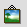

4.2 Der Bildrahmen
Wollen Sie ein Bild in Ihr Dokument einfügen, wählen Sie das 
- Symbol aus der Werkzeugpalette und ziehen Sie einen Rahmen auf. Über das Menü File / Get Picture laden Sie
das Bild von der Festplatte. Wählen Sie das  Symbol aus der
Werkzeugleiste um das Bild innerhalb des Rahmens zu verschieben.
Symbol aus der
Werkzeugleiste um das Bild innerhalb des Rahmens zu verschieben.
Modifizieren Sie den Rahmen über Item / Modify:
Bitte beachten Sie auch hier: In früheren Scribus-Versionen konnte man in diesem Dialog mittels "No Fill"
angeben, ob der Rahmen eine Hintergrundfarbe haben soll oder nicht. Dies geschieht nun über die
Farbe "None" in der Colors-Palette.
Einige Eigenschaften des Rahmens bzw. dessen Inhalts lassen sich auch mittels der Maßpalette einstellen (vgl. auch Punkt 2.2.2,
"Die Maßpalette").